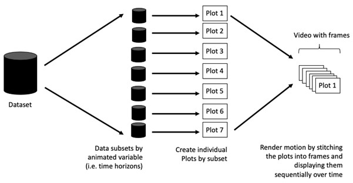
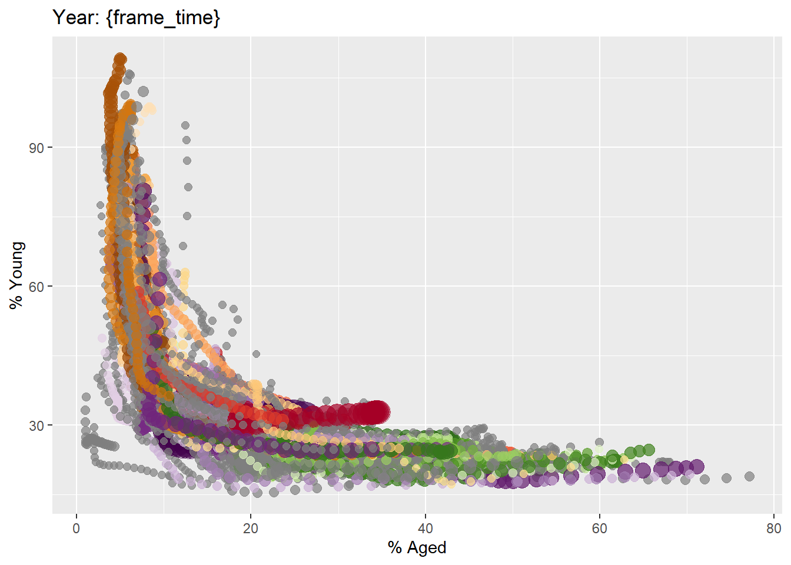
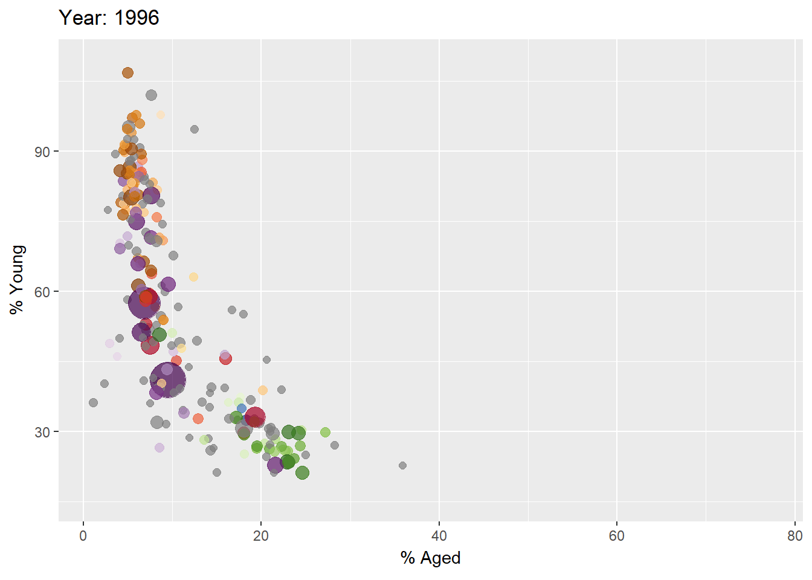

pacman::p_load(readxl, gifski, gapminder,
plotly, gganimate, tidyverse)Hands-on_Ex03B
Today we will be exploring animated statistical Graphics with R
Basic concepts of animation
When creating animations, the plot does not actually move. Instead, many individual plots are built and then stitched together as movie frames, just like an old-school flip book or cartoon. Each frame is a different plot when conveying motion, which is built using some relevant subset of the aggregate data. The subset drives the flow of the animation when stitched back together.

Tip
Before you start making animated graphs, you should first ask yourself: Does it makes sense to go through the effort? If you are conducting an exploratory data analysis, a animated graphic may not be worth the time investment. However, if you are giving a presentation, a few well-placed animated graphics can help an audience connect with your topic remarkably better than static counterparts.
These are some of the packages we will use in this session.
plotly, R library for plotting interactive statistical graphs.
gganimate, an ggplot extension for creating animated statistical graphs.
gifski converts video frames to GIF animations using pngquant’s fancy features for efficient cross-frame palettes and temporal dithering. It produces animated GIFs that use thousands of colors per frame.
gapminder: An excerpt of the data available at Gapminder.org. We just want to use its country_colors scheme.
tidyverse, a family of modern R packages specially designed to support data science, analysis and communication task including creating static statistical graphs.
NoteThings to learn from the code chunk below
read_xls()of readxl package is used to import the Excel worksheet.mutate_each_()of dplyr package is used to convert all character data type into factor.mutate()of dplyr package is used to convert data values of Year field into integer.
Unfortunately, mutate_each_() was deprecated in dplyr 0.7.0. and funs() was deprecated in dplyr 0.8.0. In view of this, we will re-write the code by using mutate_at() as shown in the code chunk below.
mutate each is also now defunct
I also found that mutate across is now the modern way to write the below code since dplyr 1.0.0
# what the code is trying to do is to convert all of the columns into categorical data except for year which is turn into a integer column
col <- c("Country", "Continent")
globalPop <- read_xls("data/GlobalPopulation.xls", sheet="Data") %>%
mutate(
across(all_of(col), as.factor),
Year = as.integer(Year)
)col <- c("Country", "Continent")
globalPop <- read_xls("data/GlobalPopulation.xls",
sheet="Data") %>%
mutate_at(col, as.factor) %>%
mutate(Year = as.integer(Year))Animated Data Visualisation: gganimate method
gganimate extends the grammar of graphics as implemented by ggplot2 to include the description of animation. It does this by providing a range of new grammar classes that can be added to the plot object in order to customise how it should change with time.
transition_*() defines how the data should be spread out and how it relates to itself across time.
view_*() defines how the positional scales should change along the animation.
shadow_*() defines how data from other points in time should be presented in the given point in time.
enter_()/exit_() defines how new data should appear and how old data should disappear during the course of the animation.
ease_aes() defines how different aesthetics should be eased during transitions.
Building a static population bubble plot
In the code chunk below, the basic ggplot2 functions are used to create a static bubble plot.
ggplot(globalPop, aes(x = Old, y = Young,
size = Population,
colour = Country)) +
geom_point(alpha = 0.7,
show.legend = FALSE) +
scale_colour_manual(values = country_colors) +
scale_size(range = c(2, 12)) +
labs(title = 'Year: {frame_time}',
x = '% Aged',
y = '% Young') 
- transition_time() of gganimate is used to create transition through distinct states in time (i.e. Year).
- ease_aes() is used to control easing of aesthetics. The default is linear. Other methods are: quadratic, cubic, quartic, quintic, sine, circular, exponential, elastic, back, and bounce.
ggplot(globalPop, aes(x = Old, y = Young,
size = Population,
colour = Country)) +
geom_point(alpha = 0.7,
show.legend = FALSE) +
scale_colour_manual(values = country_colors) +
scale_size(range = c(2, 12)) +
labs(title = 'Year: {frame_time}',
x = '% Aged',
y = '% Young') +
transition_time(Year) +
ease_aes('linear') 
In Plotly R package, both ggplotly() and plot_ly() support key frame animations through the frame argument/aesthetic. They also support an ids argument/aesthetic to ensure smooth transitions between objects with the same id (which helps facilitate object constancy).
globalPop_small <- globalPop %>%
filter(Year %in% c(1950,1960, 1970, 1990, 2010, 2020))
gg <- ggplot(globalPop_small,
aes(x = Old,
y = Young,
size = Population,
colour = Country)) +
geom_point(aes(frame = Year), # Animation frame
alpha = 0.7,
show.legend = FALSE) +
scale_colour_manual(values = country_colors) +
scale_size(range = c(2, 12)) +
labs(x = '% Aged',
y = '% Young')
ggplotly(gg)ggplotly(gg)
Note
Appropriate ggplot2 functions are used to create a static bubble plot. The output is then saved as an R object called gg. ggplotly() is then used to convert the R graphic object into an animated svg object.
Notice that although show.legend = FALSE argument was used, the legend still appears on the plot. To overcome this problem, theme(legend.position=‘none’) should be used as shown in the plot and code chunk below.
# Create a slimmed down version of the data
globalPop_slim <- globalPop %>%
filter(Year %in% seq(1950, 2020, by = 10))
gg <- ggplot(globalPop_slim,
aes(x = Old, y = Young, size = Population, colour = Country)) +
geom_point(aes(frame = Year), alpha = 0.7) +
scale_colour_manual(values = country_colors) +
scale_size(range = c(2, 12)) +
labs(x = '% Aged', y = '% Young') +
theme(legend.position='none')
ggplotly(gg)bp <- globalPop %>%
plot_ly(x = ~Old,
y = ~Young,
size = ~Population,
color = ~Continent,
sizes = c(2, 100),
frame = ~Year,
text = ~Country,
hoverinfo = "text",
type = 'scatter',
mode = 'markers'
) %>%
layout(showlegend = FALSE)
bp